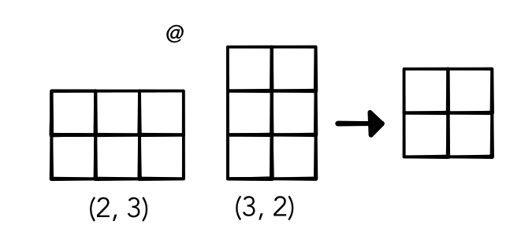
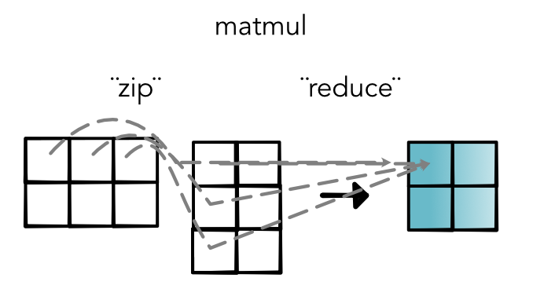

Module 3.1 - Parallelism
Module 3.1
Parallelism
Review
Classification in NLP
Systems for predicting based on word features
What is a word?
Treat words as index in vocabulary
Represent as a one-hot vector
Challenge1: Vector Form

Embedding Table

Challenge: Length Dimension

Network

Reduction / "Pooling"

Full Model

Quiz
Quiz
Efficiency
Context
We now have a pytorch
All wrappers around ops
Need to make ops fast
Goal
Optimize:
map
zip
reduce
Code
Example map
for i in range(len(out)):
count(i, out_shape, out_index)
broadcast_index(out_index, out_shape, in_shape, in_index)
o = index_to_position(out_index, out_strides)
j = index_to_position(in_index, in_strides)
out[o] = fn(in_storage[j])Why are Python (and friends) "slow"?
Function calls
Types
Loops
Function Calls
Function calls are not free
Checks for args, special keywords andm lists
Methods check for overrides and class inheritance
Types
Critical code
out[o] = in_storage[j] + 3Doesn't know type of in_storage[j]
May need to coerce 3 to float or raise error
May even call __add__ or __ladd__!
Loops
Loops are always run as is.
Can't combine similar loops or pull out constant computation.
Very hard to run anything in parallel.
Other
Many other slow things...
Lists
Classes
Magic of all kind
Fast Math
Numba
Python library for speeding up numerical python
API: Higher-order functions to produce fast mathmatical code
How does it work?
Work
def my_code(x, y):
for i in range(100):
x[i] = y + 20
...
my_code(x, y)
fast_my_code = numba.njit()(my_code)
fast_my_code(x, y)
fast_my_code(x, y)Notebook
Terminology : JIT Compiler
Just-in-time
Waits until you call a function to compile it
Specializes code based on the argument types given.
Terminology : LLVM
Underlying compiler framework to generate code
Used by many different languages (C++, Swift, Rust, ...)
Generates efficient machine code for the system
What do we lose?
njit will fail for many python operations
No lists, classes, python functions allowed
Any different types will cause recompilation
Strategy
Use Python for general operations
Use Numba for the core tensor ops
Allow users to add new Numba functions
Code Transformation
Transform
def my_code(x, y):
for i in prange(100):
x[i] = y + 20
...
my_code(x, y)
fast_my_code = numba.njit(parallel=True)(my_code)
fast_my_code(x, y)
fast_my_code(x, y)Notebook
Parallel
Parallel
Run code on multiple threads
Particularly suited for map / zip
Baby steps towards GPU
Parallel Range
Replace for loops with parallel version
Tells compiler it can run in any order
Be careful! Ideally these loops don't change anything
Code Transformation
Transform
def my_code(x, y):
for i in prange(100):
x[i] = y + 20
...
my_code(x, y)
fast_my_code = numba.njit(parallel=True)(my_code)
fast_my_code(x, y)
fast_my_code(x, y)Nondeterminism
No guarantee on ordering
Need to be careful with reductions
Speedups will depend on system
Parallel Bugs
Warning! Nasty bugs
Tests failing randomly
Crashes due to out-of-bounds
Parallel Diagnostics
Diagnostics give parallel compilation
Useful to see if you are getting benefits
Operator Fusion
User API
Basic mathematical operations
Chained together as boxes with broadcasting
Optimize within each individually
Fusion
Optimization across operator boundary
Save speed or memory in by avoiding extra forward/backward
Can open even great optimization gains
Automatic Fusion
Compiled language can automatically fuse operators
Major area of research
Example: TVM, XLA, ONXX
Automatic Fusion

Manual Fusion
Utilize a pre-fused operator when needed
Standard libraries for implementations
Example: Matmul

Example: Matmul

Matmul Simple
Advantages
No three dimensional intermediate
No save_for_backwards
Can use core matmul libraries (in the future)
Computations
Starter Code
Walk through output.
Find row and column of input
Simultaneous zip / reduce.
Example: Matmul

Matrix Multiply
Simple Matmul
Code
A.shape == (I, J)
B.shape == (J, K)
out.shape == (I, K)Simple Matmul Pseudocode
Code
for outer_index in out.indices():
for inner_val in range(J):
out[outer_index] += A[outer_index[0], inner_val] * \
B[inner_val, outer_index[1]]Complexities
Indices to strides
Minimizing index operations
Broadcasting
Matmul Speedups
What can be parallelized?
for outer_index in out.indices():
for inner_val in range(J):
out[outer_index] += A[outer_index[0], inner_val] * \
B[inner_val, outer_index[1]]Compare to zip / reduce
Code
ZIP STEP
C = zeros(broadcast_shape(A.view(I, J, 1), B.view(1, J, K)))
for C_outer in C.indices():
C[C_out] = A[outer_index[0], inner_val] * \
B[inner_val, outer_index[1]]
REDUCE STEP
for outer_index in out.indices():
for inner_val in range(J):
out[outer_index] = C[outer_index[0], inner_val,
outer_index[1]]